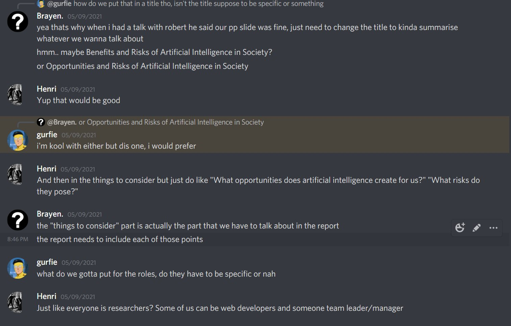
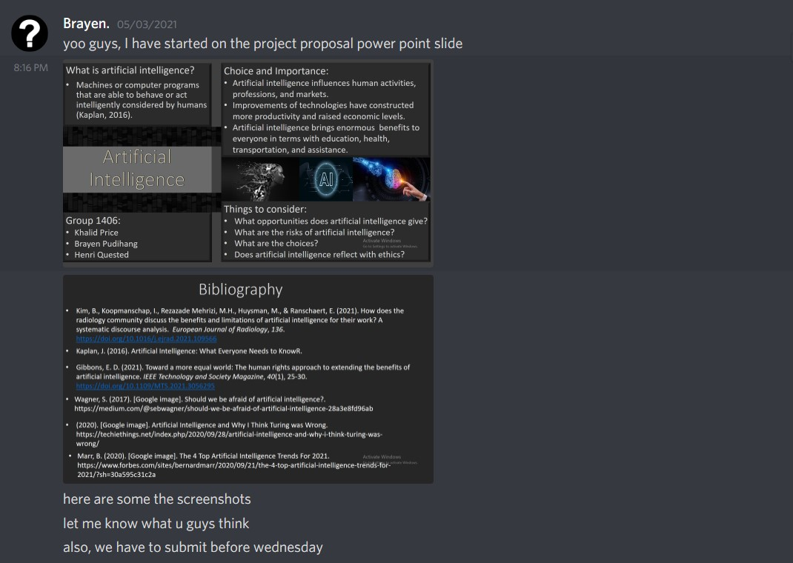
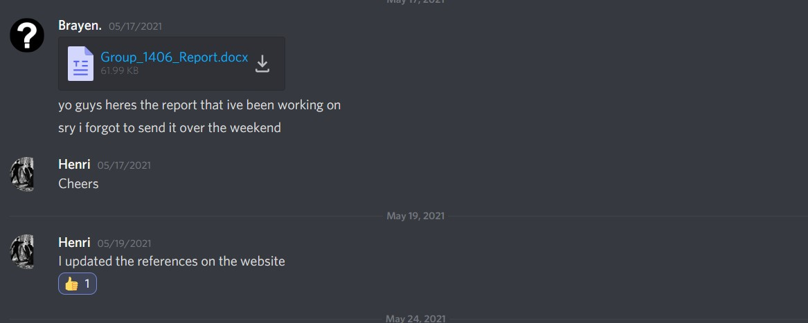

(Team coordinator to email Team Name and Site link to your TA)
Team name: Team 1406
Team Coordinator/Leader: Brayen Pudihang
We used a discord group chat to allow for smooth and constant communication within our group.    We didn't necessarily record every chat that we had but we made sure to stay in constant communication and the examples of that are above.